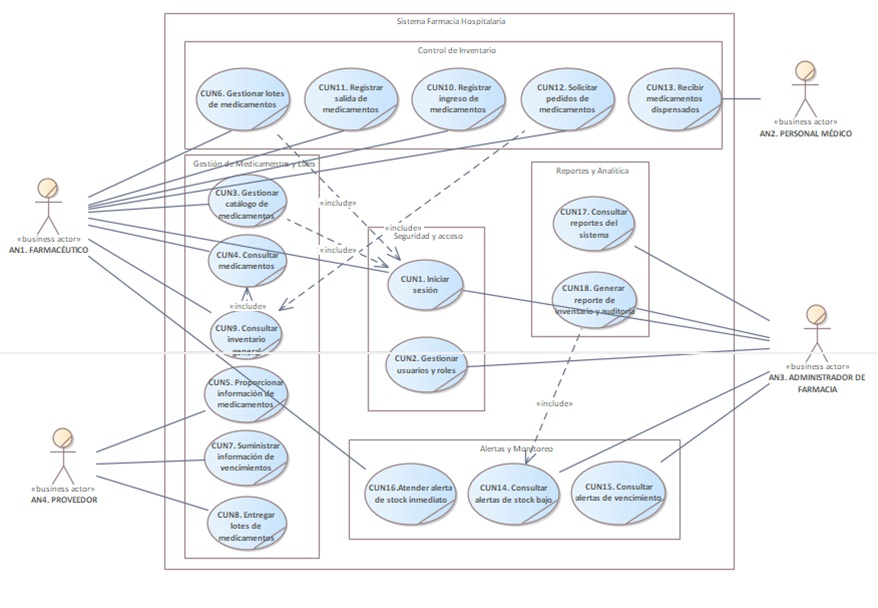
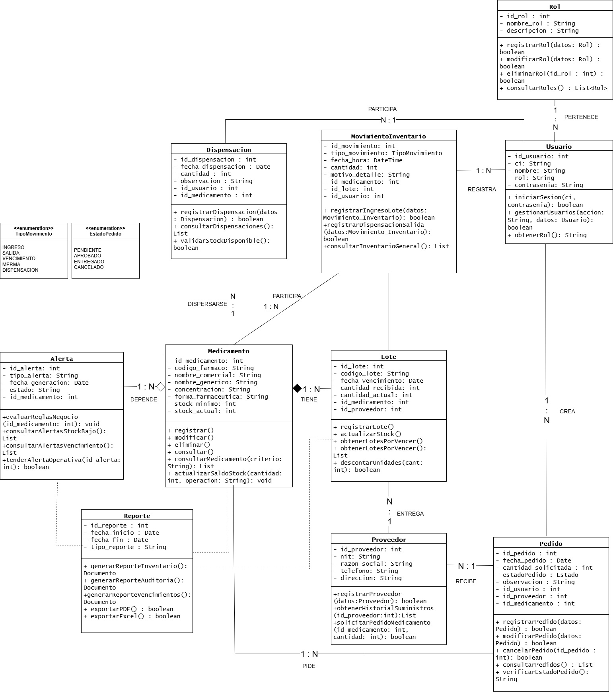
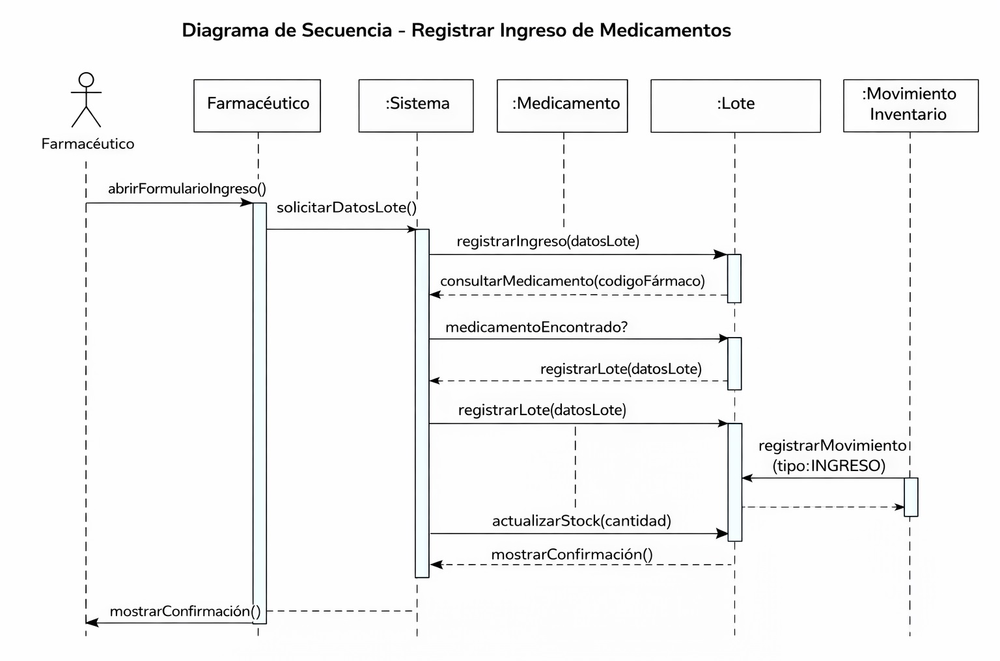
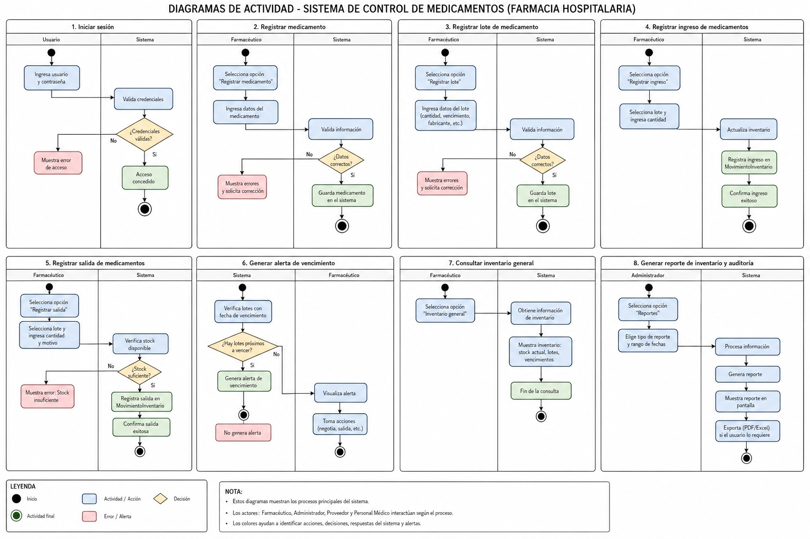

Análisis y Diseño Orientado a Objetos
11.1 Identificación de Actores
| Actor | Descripción | Responsabilidades |
|---|---|---|
| Farmacéutico | Actor operativo principal del sistema encargado de la gestión del catálogo, inventario y control de medicamentos. |
• Gestionar catálogo de medicamentos. • Gestionar lotes de medicamentos. • Consultar inventario. • Registrar ingresos y salidas. • Solicitar pedidos. • Atender alertas. |
| Administrador de Farmacia | Responsable de la seguridad, auditoría y supervisión global del sistema. |
• Gestionar usuarios y permisos. • Monitorear alertas. • Consultar reportes. • Generar reportes de inventario. |
| Personal Médico | Personal de salud que solicita medicamentos para la atención de pacientes. |
• Solicitar medicamentos. • Consultar disponibilidad. • Confirmar recepción. |
| Proveedor | Actor externo encargado del abastecimiento de medicamentos e insumos médicos. |
• Entregar medicamentos. • Proporcionar información de trazabilidad. • Informar fechas de vencimiento. • Procesar órdenes de compra. |
11.2 Diagrama de Casos de Uso

11.3 Catálogo y Descripción de Casos de Uso
| Código | Caso de Uso | Actor Principal | Descripción Breve |
|---|---|---|---|
| CUN1 | Iniciar sesión | Farmacéutico o Administrador de Farmacia | Permite a los usuarios autenticarse de forma segura en el sistema mediante sus credenciales para acceder a las funciones de la aplicación. |
| CUN2 | Gestionar usuarios y roles | Administrador de Farmacia | Permite registrar, modificar y asignar roles o permisos al personal autorizado de la farmacia. |
| CUN3 | Gestionar catálogo de medicamentos | Farmacéutico | Permite realizar la administración centralizada del catálogo, incluyendo las acciones de registrar, modificar y eliminar medicamentos. |
| CUN4 | Consultar medicamentos | Farmacéutico | Permite buscar, filtrar y visualizar los detalles técnicos y generales de un medicamento específico para la atención diaria. |
| CUN5 | Proporcionar información de medicamentos | Proveedor | Módulo externo donde el proveedor facilita los datos y especificaciones de los medicamentos que suministra. |
| CUN6 | Gestionar lotes de medicamentos | Farmacéutico | Permite llevar el control del almacén mediante el registro inicial de nuevos lotes y la actualización de su información. |
| CUN7 | Suministrar información de vencimientos | Proveedor | Caso externo donde el proveedor informa formalmente las fechas de caducidad correspondientes a los lotes enviados. |
| CUN8 | Entregar lotes de medicamentos | Proveedor | Registra la acción física, logística y de entrega de los lotes de medicamentos en el establecimiento hospitalario. |
| CUN9 | Consultar inventario general | Farmacéutico | Despliega la pantalla principal de control que muestra el estado global actual de las existencias disponibles. |
| CUN10 | Registrar ingreso de medicamentos | Farmacéutico | Registra la entrada de nuevas unidades de medicamentos al stock tras la validación de una entrega. |
| CUN11 | Registrar salida de medicamentos | Farmacéutico | Registra la disminución de existencias por conceptos de mermas, vencimientos o ventas operativas. |
| CUN12 | Solicitar pedidos de medicamentos | Farmacéutico | Genera una solicitud de abastecimiento dirigida a los proveedores al detectar desabastecimiento o stock crítico. |
| CUN13 | Recibir medicamentos dispensados | Personal Médico | Registra la entrega y confirmación de los medicamentos que el personal de salud solicitó para el cuidado de pacientes. |
| CUN14 | Consultar alertas de stock bajo | Administrador de Farmacia | Despliega un panel con los productos que han alcanzado su límite mínimo, orientado a planificar compras a gran escala. |
| CUN15 | Consultar alertas de vencimiento | Administrador de Farmacia | Muestra de forma detallada los lotes próximos a caducar para gestionar devoluciones o planes de salida con proveedores. |
| CUN16 | Atender alerta de stock inmediato | Farmacéutico | Notificación operativa en tiempo real que avisa al farmacéutico en mostrador sobre la escasez inmediata de un insumo. |
| CUN17 | Consultar reportes del sistema | Administrador de Farmacia | Permite el acceso al menú administrativo y analítico para revisar las estadísticas generales del software. |
| CUN18 | Generar reporte de inventario y auditoría | Administrador de Farmacia | Procesa y exporta documentos detallados sobre los movimientos físicos y lógicos de las existencias para la toma de decisiones. |
11.4 Diagrama de Clases

11.5 Diagrama de Secuencia

11.6 Diagrama de Actividades
